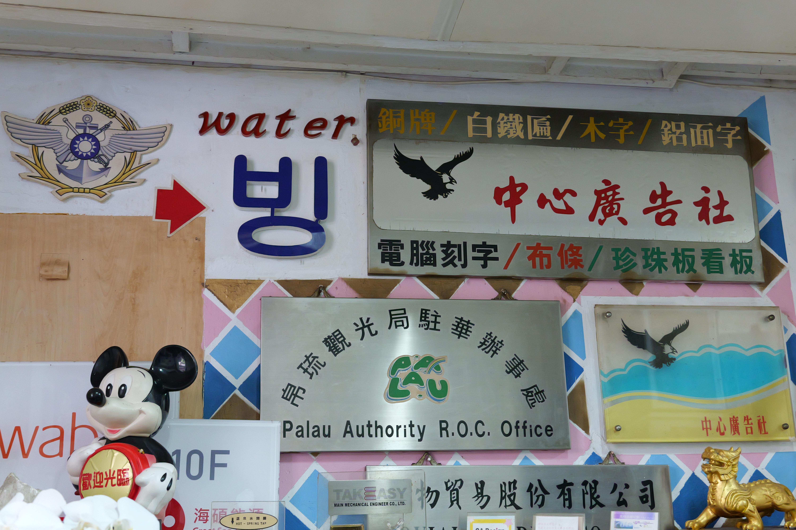
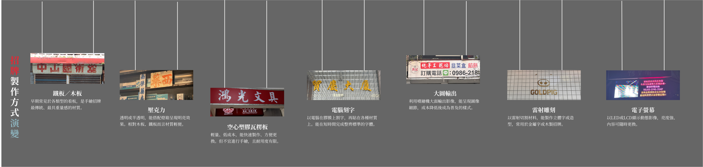
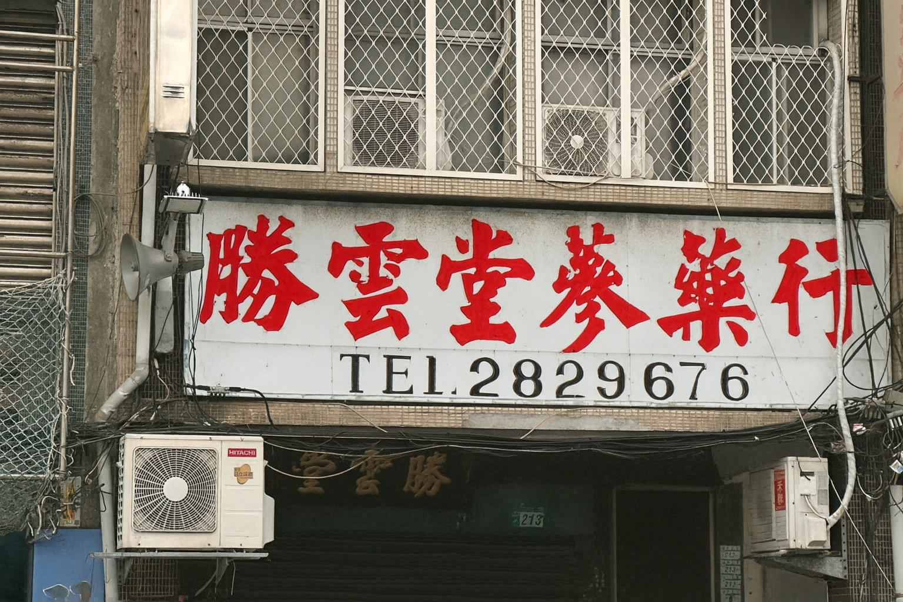
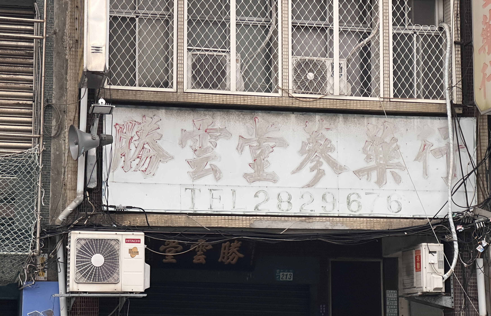

然而隨著時代演變，台灣的手繪招牌師傅大多年事已高，不再執筆或已離世。
台北市的中心廣告社，是見證這段技藝歷史的據點之一。中心廣告社創立至今，已陪伴城市走過半個世紀，見證從台灣店家招牌美學的變化。負責人廖文宏師傅今年已逾七十，最早以「手繪」維生，然而隨著電腦割字、大圖輸出的普及，他也做出其他選擇……
儘管如此，中心廣告社的存在，仍見證手繪技藝的輝煌年代，店面雖然不起眼，卻承載一代匠人的美學、技藝與生活記憶，而這門工藝，成了台灣城市景觀變遷中，逐漸被忽視的角色。
廖文宏出生於台中，在那個以讀書翻身的年代，他卻難以掌握書本上的知識，國中時甚至被貼上「不良學生」、「太保」的標籤。但幸運的是，從事戲劇佈景工作的師父仍願意給15歲的廖文宏一個機會，他成為學徒，從沒有薪水的打雜工作開始做起，在師父身邊慢慢觀察、學習手藝，幾年後熬過學徒生活、成功出師。結束學徒的那天，師父送給他一盒畫筆，成了他踏入廣告人生的第一筆資產。
帶著這盒畫筆，廖文宏離開故鄉台中，北上到新竹、台北闖蕩。早期的他沒有資本，店面與裁縫社共用，甚至連接單的電話都是跟其他店家借，從最基礎的吊招牌、做鐵架開始他的廣告人生。
後來廖文宏進入軍隊服役，不如外界所想像的痛苦，當長官得知他「是做廣告的」，立刻指派他成為營區裡的畫師，從營區壁畫、國防標語到迎接高階長官視察的大型海報都成為他的工作，甚至因此獲得一般人沒有的假期。廖文宏憑藉自己的手藝，一路從連上畫到營上，從營上畫到軍部，成為他的軍旅寫照。

中心廣告社廖文宏師傅。
攝／王浚耀

中心廣告社現在不只做手繪招牌。
攝／王浚耀

竹尺是招牌師傅的重要工具，現已停產。
攝／王浚耀
退伍後，廖文宏用5000元的積蓄，在台北市華陰街創立「中心廣告社」。創業的當下，是台灣手繪廣告看板蓬勃發展的年代，當時沒有數位科技的協助，街上新開的店家招牌、政府的政令宣導海報、即將上映的電影看板，都需要擁有手藝的師傅手工繪製。那是一個城市被人手打造、被筆觸渲染的年代，而廖文宏就是其中的一份子。
那時的招牌師傅可不只是安安靜靜坐著畫畫，反而要成為「通才」：除了最基本的寫字、畫畫，可能還要會雕刻、木工，甚至要有膽量爬高掛招牌。一塊招牌從切割、打稿、調色到豎立在店門口，幾乎都是廣告師傅一手包辦。
然而，科技浪潮隨之而來，電腦刻字、大圖輸出進入廣告市場後，其速度、成本遠遠勝過手繪技藝，手繪招牌逐漸被市場邊緣化。
中心廣告社也因應時代潮流、擁抱新技術，從原先做手繪生意轉向電腦化流程。他坦言，手繪技法的消逝固然可惜，但人還是需要順著社會走，為了生活仍須作出轉變。
如今，廖文宏的畫筆早已丟棄，如同產業縮影——曾經輝煌，但也黯淡了。



Final Horizontal Sequence
Credits
Designed with Bootstrap & JS.